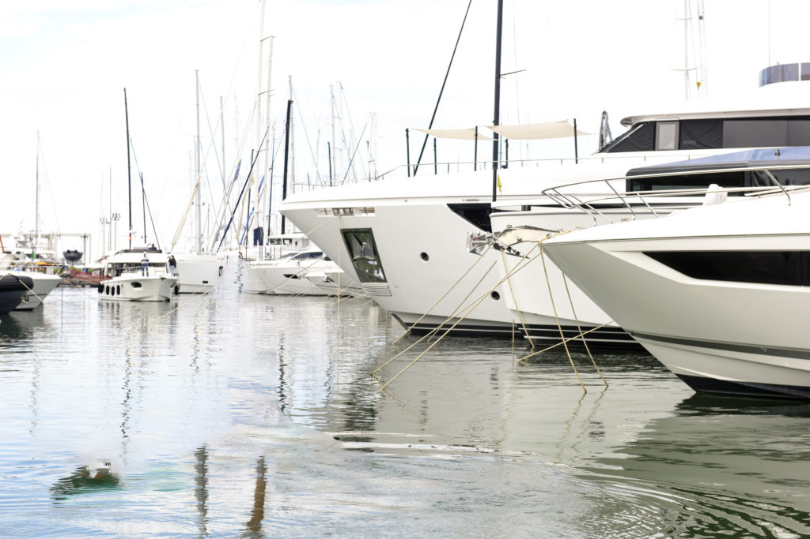
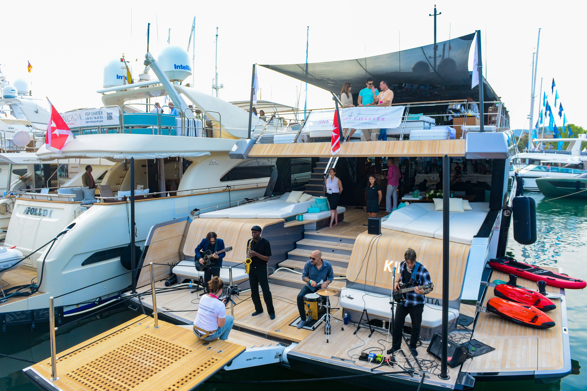
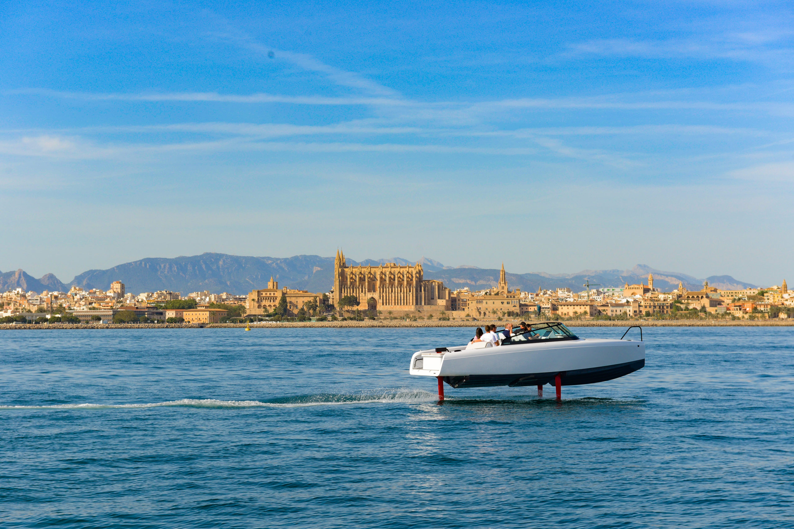

Palma International Boat Show 2024
Hosted in Palma de Mallorca, 25.04.2024 to 28.04.2024

Ahoy, Fellow Boating Enthusiasts!
The time is nearly upon us – the Palma International Boat Show is set to cast off once again, gracing the stunning shores of Palma de Mallorca with its presence. For those of us passionate about the nautical world, this is an unmissable event in the yachting calendar.
Yachts, Superyachts, and Everything In Between
Palma's show has a reputation as the place to be at the start of the Mediterranean yachting season, and it's easy to see why. The exhibition offers an eclectic mix for everyone and anyone with a love for boats and yachts. Expect to see sleek motor yachts, elegant sailboats, the latest in powerboats and catamarans, and of course, an awe-inspiring array of the finest superyachts in the world. Prepare to be dazzled by innovative design and luxurious craftsmanship.

A Buzzing Hub for the Industry
The Palma International Boat Show isn't just about admiring gleaming vessels. It plays a pivotal role in the industry, bringing together shipyards, brokers, charter companies, marine equipment suppliers, and countless enthusiasts. This is where trends are spotted, connections are made, and deals are struck. Seminars and presentations offer valuable insights, and the lively social atmosphere creates an unmissable buzz that extends into Palma's charming streets.
Sustainability on the Horizon
As the yachting world turns towards environmental responsibility, expect to see a growing emphasis on sustainability at the 2024 show. We'll likely witness a surge in electric and hybrid propulsion systems, innovations in eco-friendly materials, and a focus on minimising the impact of yachting.

Beyond the Boats
Palma de Mallorca itself is a gem. Its picturesque harbour, historic architecture, and vibrant culinary scene add magic to the boat show experience. Make time to explore the city's rich history or relax on its beautiful beaches.
Mark Your Calendars
Whether you're a seasoned yacht owner, a newcomer to the boating world, or an industry professional, the Palma International Boat Show 2024 promises to be an event of epic proportions. Start planning your trip now – I'll certainly be there, and I hope to see you on the docks!